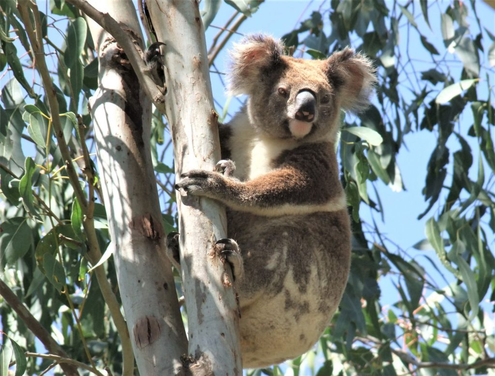

Greenloaning has expertise in the preparation of Koala Plans of Management (KPoMs) and has prepared Draft Comprehensive Koala Plans of Management (CKPoMs) for Cooma-Monaro Shire Council (now Snowy Monaro Regional Council) and Gunnedah Shire Council, in collaboration with Dr Stephen Phillips from Biolink Ecological Consultants. The Draft Gunnedah CKPoM was used by Council to underpin the Gunnedah Koala Strategy that now applies to the entire Gunnedah Local Government Area. Both projects required a community consultation component which Greenloaning administered by establishing websites, mail-outs, social media, community surveys and community information presentations. The Gunnedah plan involved extensive field work by Greenloaning personnel and Dr Phillips and preparation of a background Habitat Study to underpin the CKPoM. The results of this study and subsequent analyses of the data by Biolink confirmed the Gunnedah area as the ‘Koala capital of the world,’ with landholders and the community generally having a very positive attitude towards caring for the local Koalas and their habitat. The Cooma-Monaro CKPoM is currently awaiting final approval from Council.
Other Koala Plans of Management prepared by Greenloaning include:
- KPoM for a proposed housing development at Lake Cathie (2017)
- KPoM for the Coffs Clarence Water Supply Project – Shannon Creek (2005) Prepared for Department of Commerce/Clarence Valley Council
- KPoM for a Rural Subdivision at Red Hill near Coffs Harbour (1998)
- Koala surveys and Draft KPoM for the proposed Watermark project near Gunnedah (2011) prepared for Cumberland Ecology
- Koala population monitoring for the Shannon Creek project – 2005-2012
- Koala surveys in the Taree and Buladelah areas on behalf of Biolink Ecological Consultants
Presentations
‘Gunnedah Koalas: Thriving or Declining, and how Delicate is the Balance’ – Presentation at National Koala Conference 2017 – presented in conjunction with Dr Steve Phillips, Biolink Ecological Consultants
Related Projects
Cooma-Monaro Comprehensive Koala Plan of Management (CKPoM)
The Draft Cooma-Monaro CKPoM was on public exhibition in late 2015 and and currently is awaiting final approval by Council.
